A backyard doesn't need a contractor to look finished.
It doesn't need a big budget either.
Most of what makes a yard feel styled comes down to a handful of small projects. Not one expensive renovation.
These 15 ideas are ones you can mostly DIY, one weekend at a time.
Pick a few, not all fifteen at once.
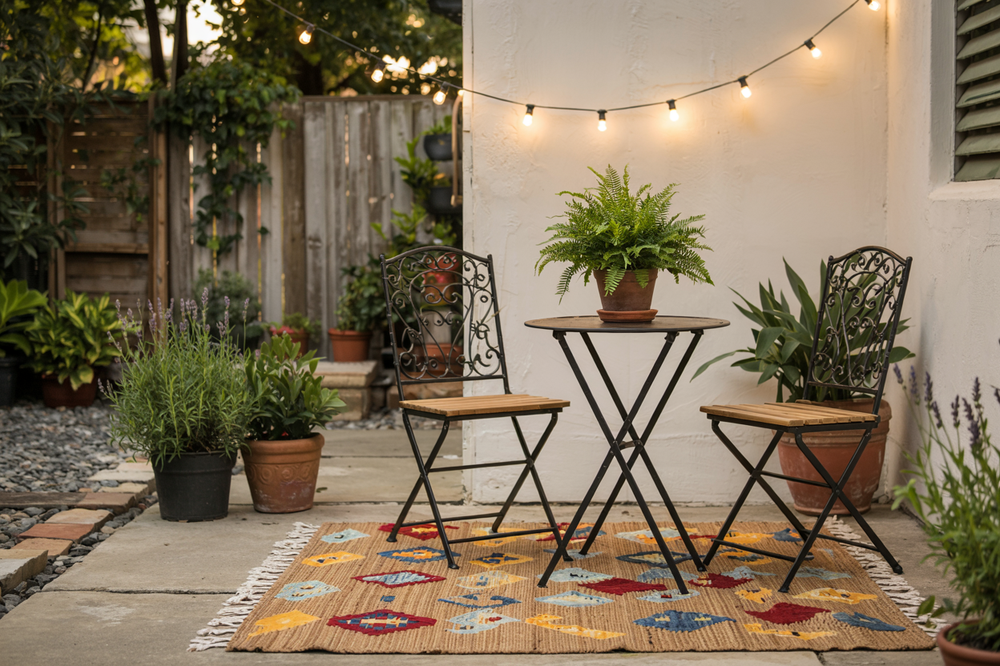
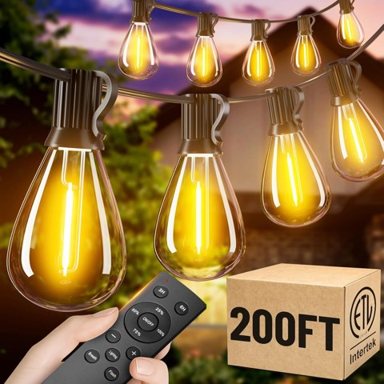
200 ft Outdoor String Lights with Remote, Waterproof, Shatterproof Bulbs
Shop on AmazonSmall Projects Beat One Big Renovation
A full backyard renovation costs real money and takes real time to plan.
A handful of smaller projects, tackled one weekend here and there, add up to most of the same transformation.
For a fraction of the cost.
Every idea below stands on its own. Do them in any order. Skip the ones that don't apply.
Think of this less as a checklist and more as a menu — grab whatever actually solves a problem you have right now.
1. Mulch for Instantly Tidier Beds
Start here. It's the best return on effort of anything on this list.
A fresh layer of mulch across your garden beds makes the whole yard look more maintained in an afternoon.
Almost no skill required.
It genuinely helps the plants too — holds moisture in, keeps weeds down.
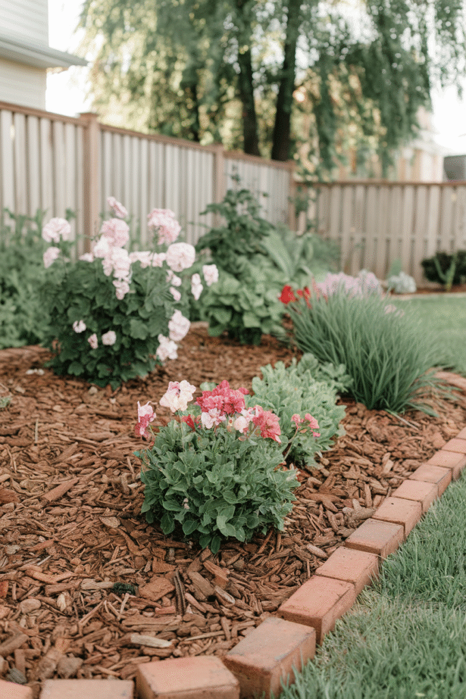
2. String Lights for Instant Mood
A strand of warm string lights across the patio, or between two trees, changes a backyard's evening feel more than almost anything else you could do.
It's also one of the cheapest items on this whole list.
And one of the fastest to put up.
Go solar-powered if you don't want to deal with an outdoor outlet.
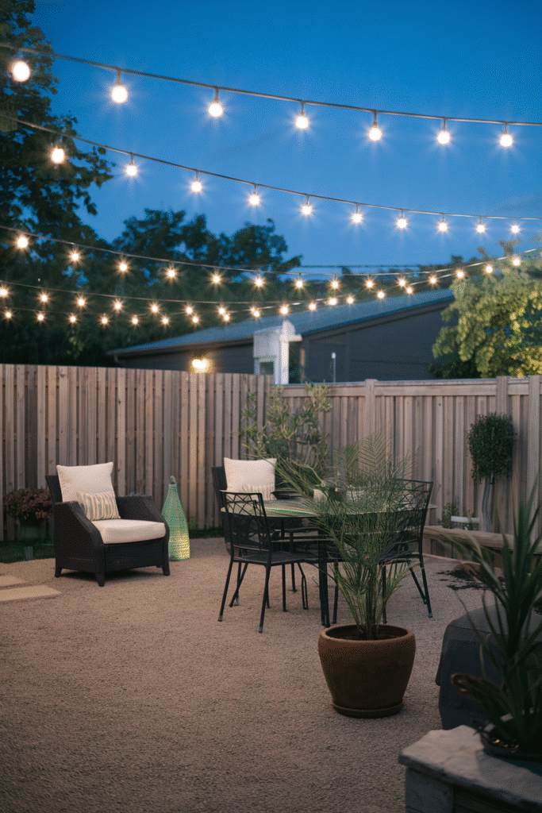
3. An Outdoor Rug for a Finished Patio
A weather-resistant rug turns bare concrete into something that actually feels like a room.
It's one of the simplest ways to add color and texture without touching a single plant.
Just make sure it's rated for outdoor use.
Sun and moisture will test that rating fast.
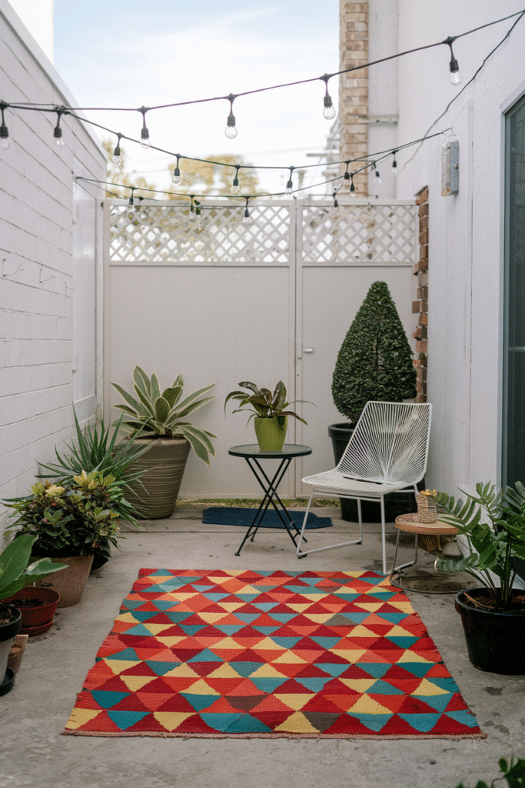
4. A Painted Fence for a Color Reset
A fresh coat of paint on an old fence changes your yard's entire color story.
For the cost of a few cans of paint.
Go bold if you want a statement. Go whitewash or neutral if you want something timeless.
It's more physically demanding than most projects here, but it also lasts the longest.
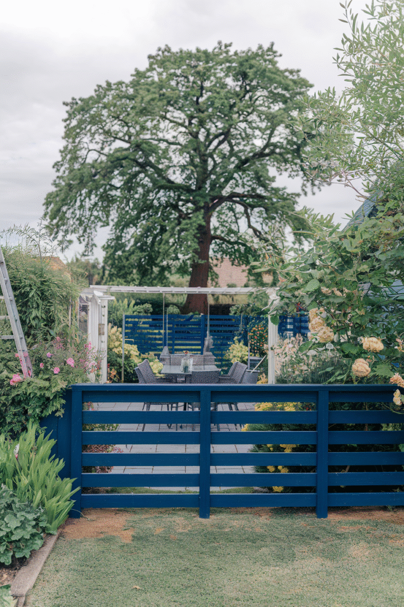
5. A DIY Fire Pit for Evening Hangouts
A simple ring of pavers, or a metal fire bowl, turns your backyard into an actual evening hangout, not just a daytime space.
This one punches way above its cost.
Just keep it a safe distance from fences, trees, and furniture.
The exact style matters a lot less than that one safety detail.
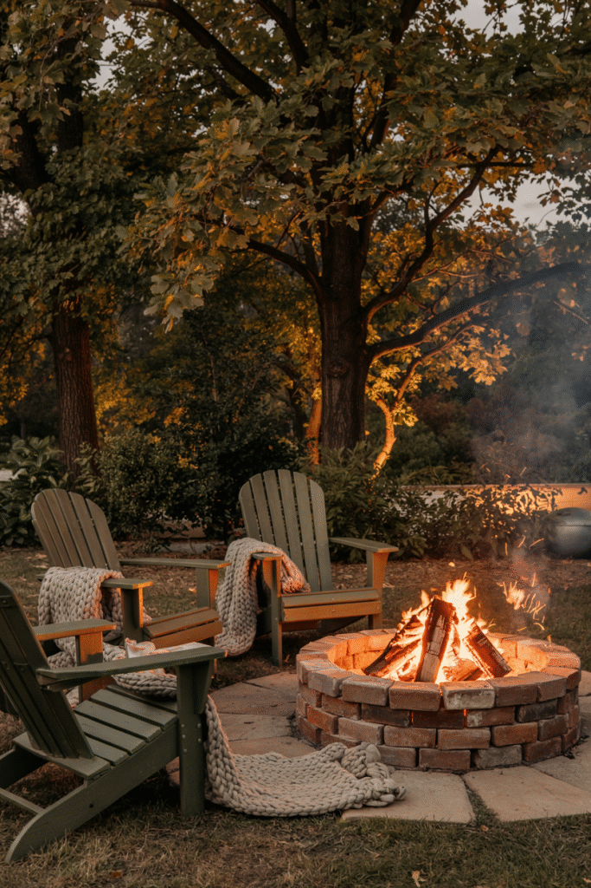
6. A Hammock for a Dedicated Chill Spot
String a hammock between two sturdy points and you've carved out a clear relaxing spot.
In a yard that might otherwise feel purely functional.
Works in a surprisingly small space, as long as you've got two solid anchor points.
Low effort. High use. One of the best ratios on this whole list.
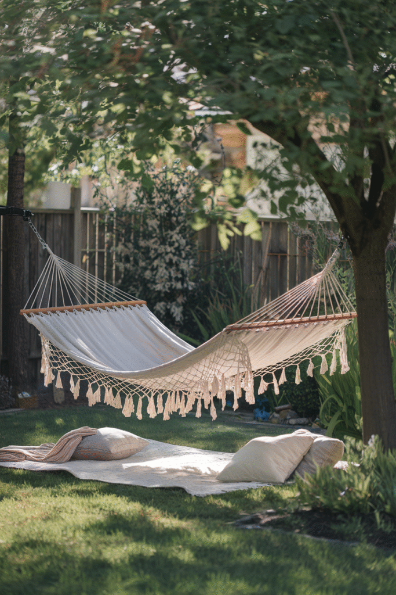
7. A Gravel Path for Instant Structure
A simple gravel path connecting two points in the yard adds structure and intention.
It's a genuinely doable weekend project. Just edging material and gravel, no real construction skill needed.
It also solves a real problem: a defined walkway instead of a worn dirt track across the lawn.
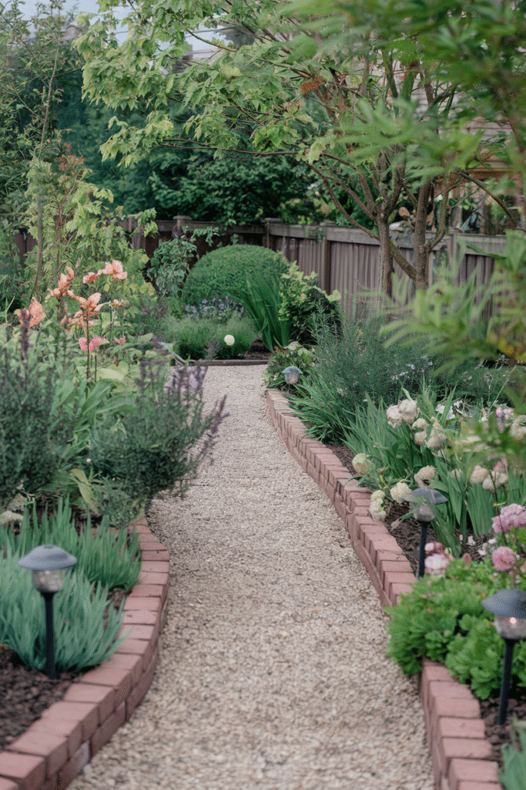
8. A Repurposed Pallet Deck
Sanded, sealed pallets can be arranged into a simple raised deck surface.
For a fraction of the cost of composite decking.
This suits a smaller seating nook more than a full-sized deck, given how big standard pallets are.
It pairs naturally with the fire pit and hammock ideas above.
Add a sisal rug on top and it stops reading as 'pallets' entirely.
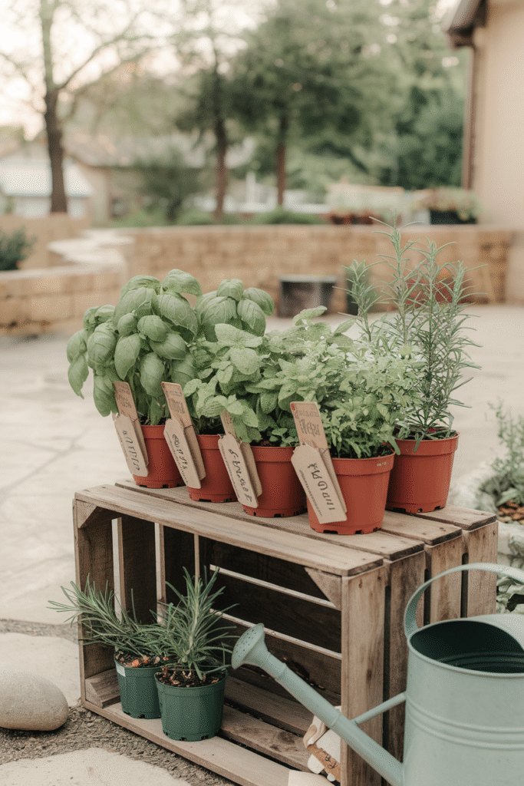
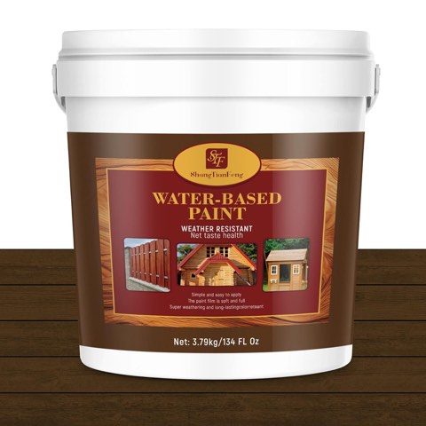
All-in-One Wood Stain, Sealer and Preservative for Decks and Fences, 1 Gallon
Shop on Amazon9. A Vertical Garden for Small Spaces
A wall-mounted or stacked planter system adds real greenery without using any ground space.
Works especially well on a narrow fence line, or a small patio where a traditional bed just isn't practical.
If your backyard is small, this isn't a compromise. It's genuinely the better option.
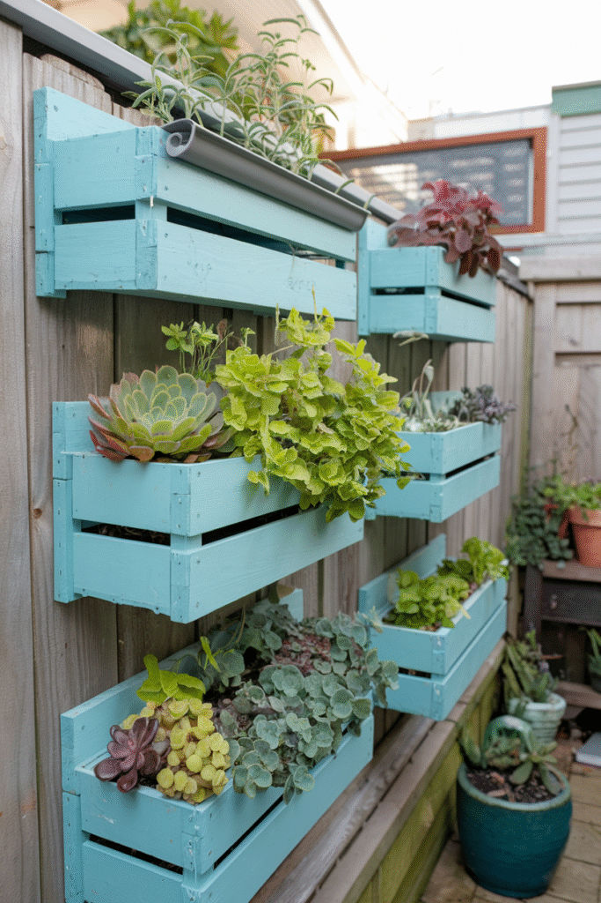
10. A DIY Trellis for Climbing Plants
A simple wood or wire trellis gives vines, beans, or flowering plants somewhere to grow up instead of out.
That adds vertical greenery and height to a yard that might otherwise feel flat.
A basic version takes just a few pieces of wood or wire, and an afternoon.
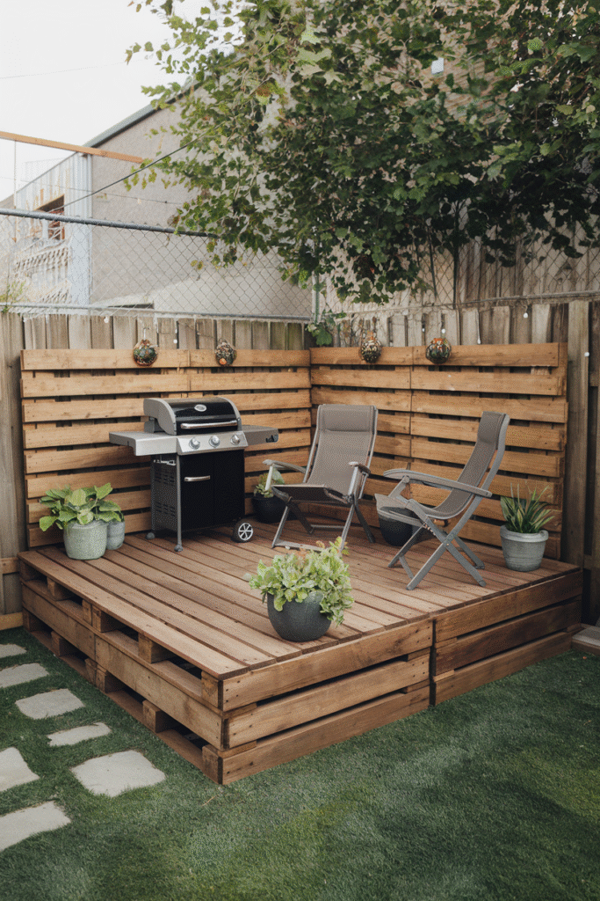
11. DIY Planters From Stuff You Already Have
An old crate. A bucket. Any repurposed container with a few drainage holes drilled in.
That's a planter now.
It's one of the cheapest ways to add plants, since you skip buying dedicated pots entirely.
Group a few mismatched ones together and it reads as intentional, not thrown together.
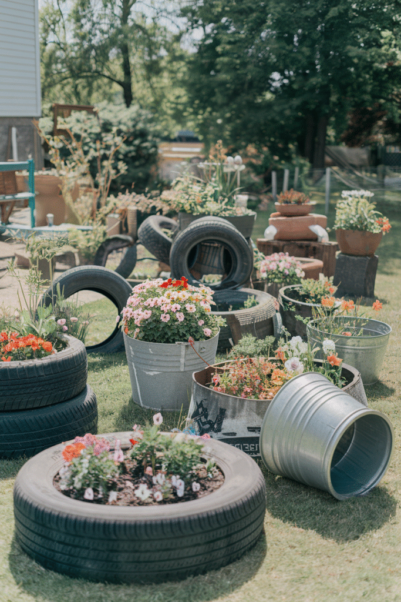
12. A Small Herb Garden for Actual Use
A few pots, or a small raised bed of herbs, adds real daily usefulness that purely decorative plants don't.
There's also a scent payoff here that's easy to forget about when you're only planning for how things look.
One of the most functional ideas on this list. Also one of the easiest to start small and grow later.
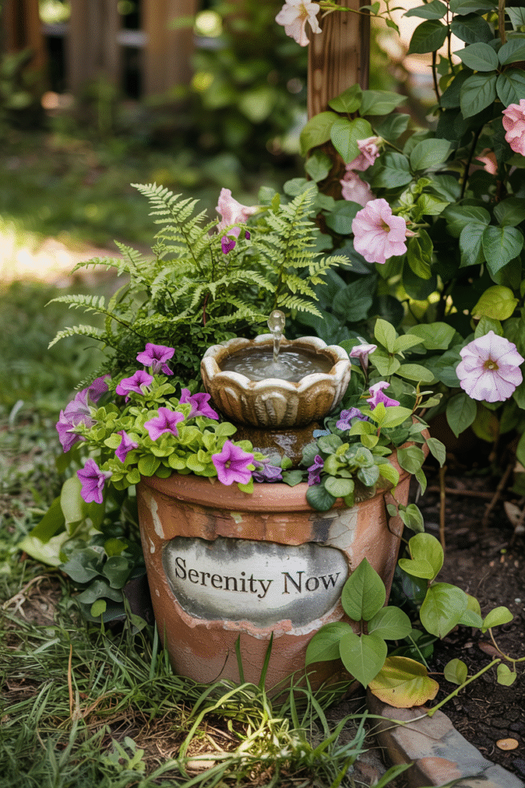
13. A Solar Fountain for Ambient Sound
A small solar-powered fountain adds the sound of moving water.
No wiring. No ongoing electricity cost.
It's a more calming addition to a seating area than most visual-only decor can manage.
Just put it somewhere genuinely sunny — the panel needs real light to run the pump.
Tuck it near the seating area, not off in a corner, so the sound actually reaches people.
14. A Kids' Corner With DIY Toys
A small dedicated play spot — a sandbox, a simple obstacle course, a chalkboard fence panel — keeps kids' outdoor stuff contained to one area.
That keeps the rest of the yard looking styled instead of cluttered with toys.
A lot of this can be built from the same reclaimed materials as everything else on this list.
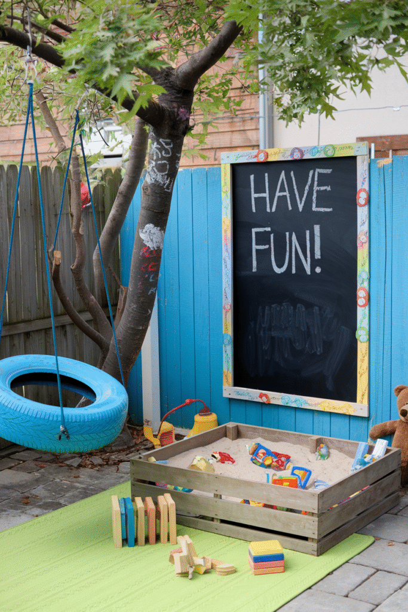
15. Upcycled Furniture for Real Character
An old dresser. A stack of crates. A thrifted chair, repainted or reupholstered.
This brings character that brand-new furniture usually can't fake.
It's also one of the cheapest ways to add seating, since the materials are often already sitting around, or found secondhand.
A coat of outdoor-rated paint or sealant stretches the life of almost anything you repurpose this way.
Mix two or three mismatched pieces together and it starts to look like a deliberate, collected style rather than a pile of salvage.
Pick a Few, Not All Fifteen
You don't need to touch every idea on this list.
Pick two or three that solve the most obvious gap in your yard right now — lighting, seating, or greenery.
Build from there.
A styled backyard comes down to a handful of small, deliberate projects.
Not one expensive overhaul you've been putting off.
Give yourself a season to work through a few of them, and the yard will feel like a different place by the end of it.